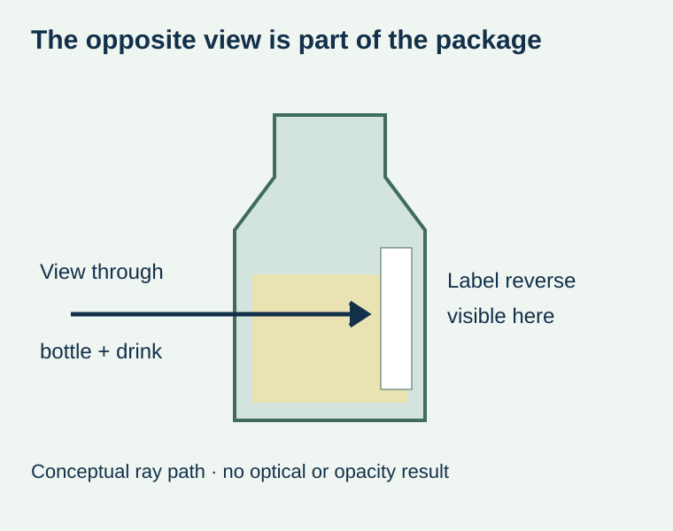
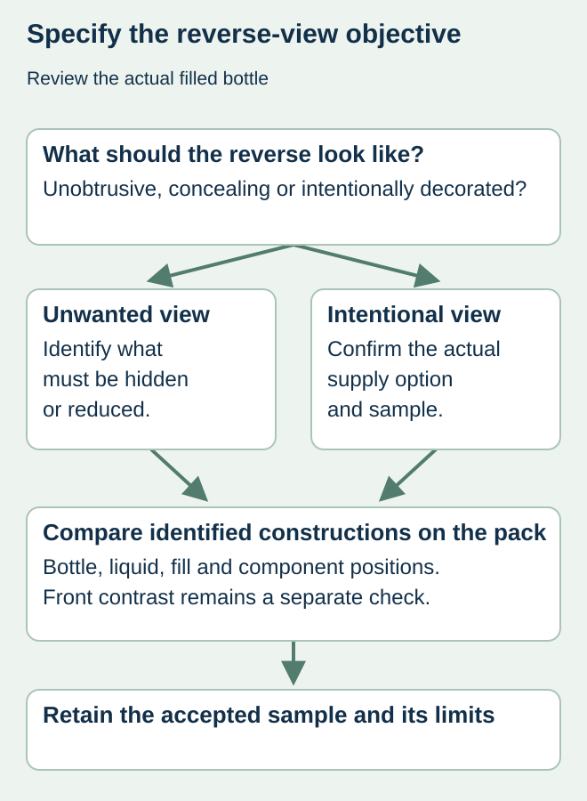

A clear juice bottle looks polished from its main label face. Turn it around and the shopper can see the label’s reverse through the bottle and drink. Unplanned print-through or a visually untidy backing can become part of the pack even though the front proof was approved.
Approve the outside face and the through-bottle view as different appearance questions on the actual filled pack. Decide whether the reverse should be unobtrusive, conceal the front design or deliberately carry another effect. Do not assume that a clear or white material name answers that decision.


Define which view the shopper can actually see
Avery’s juice-label guidance specifically raises the appearance of a label through the bottle. That is useful context for an approval brief, not proof that every label construction supports reverse printing. The actual result depends on the proposed construction and package; any specialized printing option requires the converter’s confirmation.
Identify bottle color, liquid appearance, fill level and the relative positions of front and back components. An empty clear bottle does not represent every filled product. Likewise, the familiar front-side question of white ink behind text is not the same as deciding what is visible from the opposite side of the bottle.
Write a reverse-view brief before choosing the construction
| Viewing requirement | What to identify | Evidence to request |
|---|---|---|
| Main outside face | Accepted front design and its readable information | Relevant final-size label sample |
| Through-bottle view | Which label reverse is visible from which direction | Actual filled-bottle comparison |
| Opacity goal | What should not show through, if anything | Construction-specific physical evidence |
| Intentional reverse image | Exact desired image and direction, if requested | Confirmed supplier capability and representative sample |
| Variants | Bottle and liquid differences across the range | Which versions the approval does and does not cover |


Choose among actual proposals, not imagined layers
Ask the converter to identify the proposed face, adhesive, white or opaque elements and any reverse decoration. These may create different visual surfaces. Do not turn an ordinary paper-label order into a two-sided printing promise merely because an example from another supplier looks attractive.
For a hypothetical pale-juice range, an unobtrusive reverse might be more important than retaining a clear border. Another brand may intentionally want an image visible through a clear window. The alternatives should be quoted and sampled according to those different objectives. Neither is established by a screen mockup showing only the front face.
Keep two approval questions separate
The white-ink guide addresses visibility of front text and codes over a changing background. This brief addresses the reverse that may be seen through the container. The blockout guide concerns concealing identified information on a host surface; its acceptance should not be copied into a through-bottle appearance requirement without review.
Inspect the proposed samples in the relevant views and conditions agreed by the brand. Record any limitation such as a sample representing only one liquid color or bottle supply. A photograph can preserve the setup, but a single favorable angle is not the complete physical appearance decision.
Release the filled-pack appearance, then preserve it on reorders
Keep the accepted sample identity with the artwork and construction references. If the liquid appearance, bottle, label coverage or supplied construction changes, ask which part of that evidence remains representative. An unchanged front PDF does not establish that the view through the bottle stayed unchanged.
The purchasing outcome should name an accepted appearance and a confirmed supply proposal. It should not promise a particular opacity, optical effect or reverse-printing service that has not been demonstrated for the order.
Discuss the unresolved label requirement
Send the actual filled bottle, front/back layout, expected product appearance and the view you want to preserve or hide. State whether reverse decoration is requested or simply an unwanted appearance to avoid. Prepare a label specification inquiry. The contact page opens an email draft and lists email or WhatsApp for attachments. Supply, proof options, testing, pricing and timing require project confirmation.